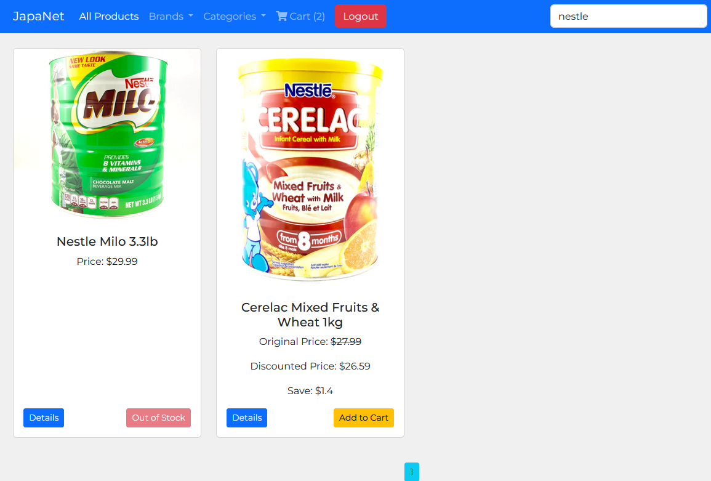

The name "JapaNet" embodies the core values and functionality of our platform. Drawing from the Nigerian term "Japa," meaning "travel," and coupled with "net," signifying connectivity and accessibility, our platform represents a gateway to a world of local goods and cultural experiences.
By harnessing the power of digital connectivity, JapaNet facilitates seamless relationships and trading across geographic boundaries. Whether you're an African living abroad yearning for a taste of home or a global citizen seeking authentic local products, JapaNet brings the world to your fingertips.
Through JapaNet, individuals can traverse borders effortlessly, discovering and accessing local goods from diverse regions. Our platform serves as a conduit for cultural exchange, empowering artisans, producers, and consumers worldwide.
Join us on a journey of exploration and connection with JapaNet. Experience the joy of travel without leaving your doorstep, and unlock a world of possibilities with every click.
Utilize brand names, categories, or descriptions to quickly locate products. You can be sure you'll find what you're looking for fast and effectively thanks to our sophisticated search functionality.
Check the product availability with the real-time stock level indicators. Making educated purchasing selections requires being able to quickly determine which products are in and out of stock.
You may even add products to your cart without logging in with just one click. When you're ready to check out, the products you have chosen will be kept in your cart.
Our project was born out of a deep-rooted desire to bridge the gap between Africans living abroad and the rich offerings of our local markets. As people who have family members spread around the globe, we frequently learn that they constantly long for the tastes, smells, and memories of home.
It all began with a sincere chat among friends, during which we expressed our desire for the lively marketplaces and varied merchandise that characterize our cultural history. We saw a platform that would make it simple for Africans living abroad to obtain local items, no matter where they were in the world. We realized that this platform had enormous potential to help Africans reconnect with their roots.
Our mission is to not only make life easier for our fellow Africans living abroad, but also to show the world the beauty and abundance of our regional products. Our goal is to support local producers and artisans while celebrating our cultural heritage by introducing our products to international markets.
Every member of our team contributes to the success and genuineness of our platform with a different set of abilities, experiences, and cultural insights. This project is more than simply a commercial venture; it's evidence of our commitment, inventiveness, and steadfast faith in the transformative potential of technology to unite people from different backgrounds.
In February, 2024 , we started our trip by coming up with ideas and organizing the project. We've since started a development journey, refining the functionality and design to guarantee a smooth and enjoyable user experience.
This project is a Portfolio Project for Holberton School. Holberton School
Frontend - Izuchukwu Abonyi
Backend - Bernard Amegah